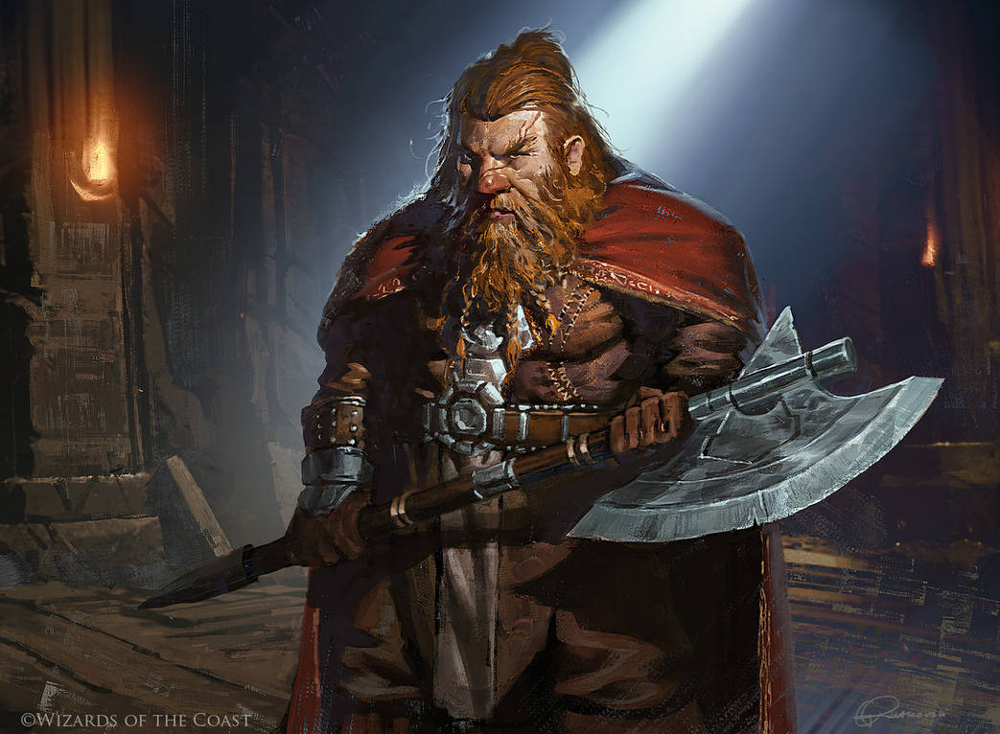
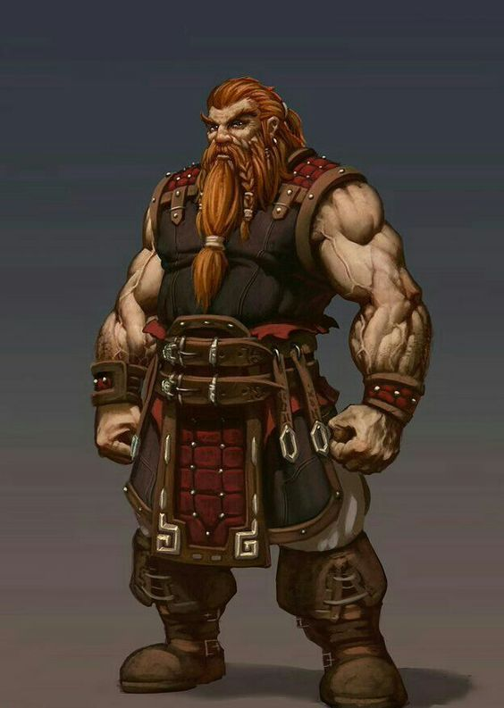

<!DOCTYPE html>
<html lang="pt-br"></html>

    <head>
        <meta charset="UTF-8">
        <title>My RPG Caracter</title>

        <style>
            body {
                color: rgb(255, 255, 255);
                background-color: rgb(51, 51, 51);
            }
            #anao {
                width: 100%;
                
            }
            h1 {
                padding-left: 20px;
                text-transform: uppercase;
                font-weight: bold;
                font-size: 22px;

            }
            h2 {
                text-align: center;
            }
            p {
                text-align: center;
            }
            h3 {
                text-align: center;
                padding: 20px;
            }
            ul {
                display:inline-block;
                vertical-align: top;
                width: 20%;
                margin-right: 25%;
            }
            #anao2{
                width: 50%;
            }
        </style>
    </head>

    <body>
        
        <header>
            <h1>Transformações Cotidianas: O Impacto da Tecnologia em Nossa Vida"</h1>
            <h2>tecnologia no cotidiano</h2>
        </header>
        
        <h3>Historia</h3>

        <p>Gerrit é um anão de estatura média, com uma barba longa e grisalha que ele cuida com orgulho. 
            Ele tem uma constituição robusta e uma barriga gordinha que é um reflexo de sua paixão pela boa comida e cerveja. 
            Seus olhos azuis brilham com determinação e sabedoria.
            Personalidade: Gerrit é um ferreiro habilidoso e trabalhador. 
            Ele é conhecido por sua natureza amigável e acolhedora, 
            sempre disposto a compartilhar uma história ou um copo de cerveja com viajantes que passam por sua forja. 
            Ele é leal aos amigos e tem um profundo senso de justiça. 
            Gerrit é teimoso quando se trata de cumprir seus compromissos e é um defensor apaixonado das tradições anãs.
            História de Fundo: Gerrit cresceu em uma comunidade anã nas montanhas holandesas, onde aprendeu as artes da forja com seu avô. 
            Ele deixou sua terra natal em busca de aventuras e novas oportunidades, mas nunca se esqueceu de suas raízes..</p>

        <p> Agora, ele estabeleceu sua própria forja em uma pequena vila, onde cria armas e armaduras de alta qualidade para aventureiros e cavaleiros. 
            Ele também possui um grande machado de guerra anão para se proteger quando a necessidade surgir.
            Gerrit busca aperfeiçoar suas habilidades como ferreiro e preservar as tradições de sua cultura anão. 
            Ele valoriza a amizade e a camaradagem, e está disposto a ajudar seus companheiros de equipe a superar desafios, 
            tanto na forja quanto no campo de batalha.</p>

        <h4>Equipamento</h4>

        <p style="font-size: 20px"><em> Gerrit usa um avental de couro resistente enquanto trabalha na forja e carrega um martelo de forja especializado. </em></p>

        <h3>Pros</h3>

        <ul>
            <li>Como ferreiro habilidoso, Gerrit é capaz de criar e consertar uma variedade de equipamentos, 
                desde espadas afiadas até armaduras sólidas.</li>
            <li>Ele também é resistente e corajoso em combate, usando seu machado de guerra com habilidade.</li>
        </ul>
        
    </body>
</html>
